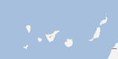

El tamaño de las burbujas es el tamaño real de la superficie quemada

- Fuego intencionado
- Fuego no intencionado
El hombre es el principal causante de la mayoría de los 170.822 incendios ocurridos entre 2001 y 2010. Alrededor del 55 por ciento se iniciaron de manera intencionada.
El mayor número de hectáreas se quemaron en Galicia, donde más del 80 por ciento de los incendios fueron intencionados. Allí ocurrió el grueso de los fuegos atribuidos a pirómanos, aunque los expertos cuestionan el uso indiscriminado del término “pirómano” en esta comunidad. Además, las causas de los incendios son supuestas en gran parte de los casos.
Los datos económicos sobre pérdidas y el gasto en extinción son muy incompletos. Aún así, se puede afirmar que, como mínimo, los incendios costaron alrededor de 1.000 millones de euros.
Los incendios de 500 hectáreas o más, denominados "grandes incendios forestales", son pocos en número, pero proporcionalmente son los más devastadores. Representan tan solo el 0.2 por cierto de todos los incendios en la década, aunque son los culpables del 40 por ciento de la superficie quemada.
Las únicas comunidades en las que no ha habido uno en la última década son las Islas Baleares y La Rioja.
Algunas organizaciones ecologistas aseguran que reduciendo este tipo de incendios se mejoraría el problema del fuego en nuestro país. Todas insisten en que la mejor política es la prevención.
El clima es un factor clave para que los fuegos se inicien y propaguen rápidamente. Más del 70 por ciento de la superficie quemada durante la década ardió entre junio y septiembre. Agosto es el mes en el que más incendios ocurrieron. Sin embargo, el día que más destaca es el 27 de julio: 834 incendios en diferentes años que representan casi un cinco por ciento de todas las hectáreas quemadas.
Ese día, en 2004, comenzó un fuego en Minas de Riotinto (Huelva), que acabaría siendo el más grande de la década. Quemó 29.867 hectáreas. Los datos del Ministerio de Agricultura no muestran víctimas mortales, pero en los medios se informó de la muerte de un matrimonio.
El peor incendio de las islas Canarias también se inició, intencionadamente, un 27 de julio.
Las tormentas secas del verano de 2003 hicieron arder Extremadura. Los rayos iniciaron los incendios más devastadores: 15 en los dos primeros días de agosto, que acabaron con más de 16.500 hectáreas. WWF indica que la destrucción habría sido menor si los montes hubieran estado mejor preparados para evitar las llamas.
Ese año se quemaron más de un tercio de todas las hectáreas forestales que la comunidad autónoma perdió al fuego durante la década.
Casi un 20 por ciento del suelo calcinado entre 2005 (primer dato disponible) y 2010 era parte de un espacio natural protegido. El hecho de llamarse "protegido" no les salva de las llamas.
Un caso llamativo es el Parque Natural del Lago de Sanabria (Zamora), el mayor lago de origen glaciar de la Península. En tan solo seis años ha sufrido 126 incendios, que han abrasado alrededor de 12.000 hectáreas, según los datos del ministerio. Casi todos los fuegos eran intencionados.
Entre las principales motivaciones detectadas se encuentran la regeneración de pastos y eliminación de matorrales por parte de pastores y ganaderos o la reproducción de fuegos mal extinguidos.
La Fundación Ciudadana Civio ha tenido acceso a la base de datos nacional de incendios forestales del Ministerio de Agricultura, Alimentación y Medio Ambiente. Hasta ahora, solo había estadísticas. Por primera vez, información tan detallada sobre incendios ve la luz pública.
"Visita guiada" es una selección de ocho historias destacadas entre 2001 y 2010 (últimos datos disponibles).
En "Explora los incendios" puedes interactuar con los fuegos de 100 hectáreas o más, seleccionar aquellos que más te interesen o localizar los cercanos a un municipio. Esta es una buena herramienta para poner en contexto los incendios que están ocurriendo.
Abajo, podrás ver qué pasó año a año o incluso descargar los datos para comprobarlos.
Y si quieres que sigamos investigando, puedes hacer una donación.